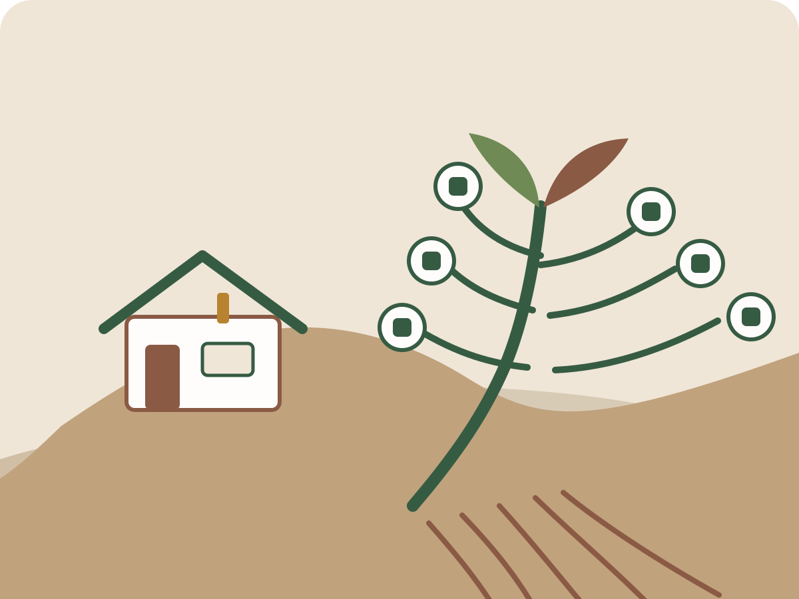
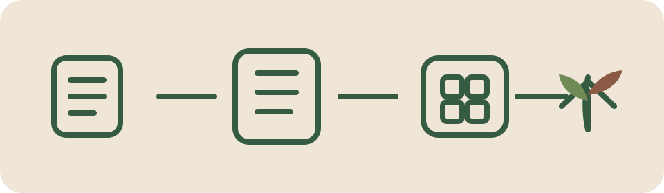
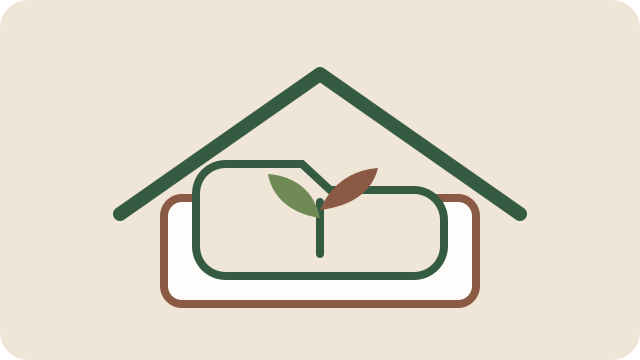
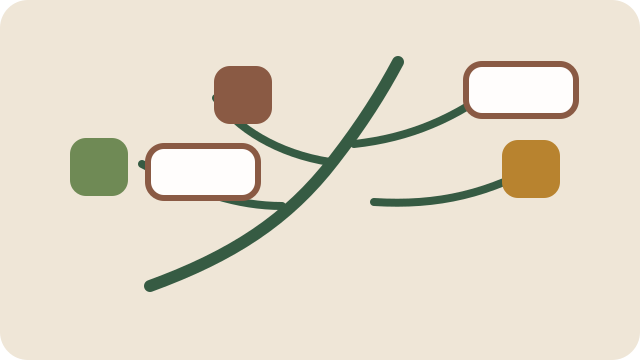
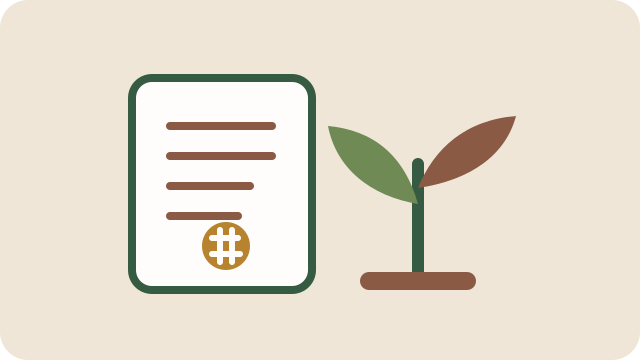

Subscription fatigue
Households end up stacking fees for planners, meal tools, budgeting apps, family calendars, and storage that should feel more like utilities than leases.
Non-profit · Open source · Self-hosted for families
The Sovereign Home helps families bring essential software back into the home: budgeting, meal planning, calendars, coordination, and bitcoin-native treasury tools running on hardware you own.

The problem
Households end up stacking fees for planners, meal tools, budgeting apps, family calendars, and storage that should feel more like utilities than leases.
Your routines, schedules, finances, and household records often sit on servers you don’t control, behind policies you didn’t write.
Family finance software is often built for debt, churn, and generic dashboards. Sovereign money deserves quieter, more grounded tools.
The suite
Each app is designed to feel simple on the surface and durable underneath. Home Base acts as the control plane for the whole home stack.
Install, manage, and update the whole suite from one calm dashboard.
Cash flow and budgeting designed for a real household, not a fintech persona.
Tasks, reminders, and coordination for the everyday rhythms of home life.
Meal planning, recipes, and the practical logistics behind “what’s for dinner?”
A family calendar that belongs to the household, not a platform strategy.
Household treasury and bookkeeping for families who want sovereign money in the stack.
Lights, HVAC, and power management with a home-first point of view.
A document vault for manuals, warranties, insurance records, and household paperwork.
Property management for the garage, pool, yard, maintenance, and the real work of home ownership.
How it works
You do not need a giant stack. Start small: one home server, one dashboard, one or two useful apps, then expand as your household grows into it.

Why this exists
This is not a funded startup and not a funnel. It is a long-view project about giving families software they can actually keep.

Schedules, budgets, recipes, records, and routines should live where family life actually happens.

The project ships seedlings: working open-source software you can adopt, adapt, and extend over time.

Bitcoin belongs here as a financial layer of sovereignty, but the brand remains rooted in family life rather than internet ideology.
About
After 25 years in software engineering, including work at MITRE and USC ICT, the goal is simple: make useful family software that feels owned, durable, and honest.
The Sovereign Home is a non-profit, open-source effort — a piece of infrastructure for families, not a venture-backed product looking for extraction.
“A good home stack should feel less like software you lease and more like a garden you tend.”